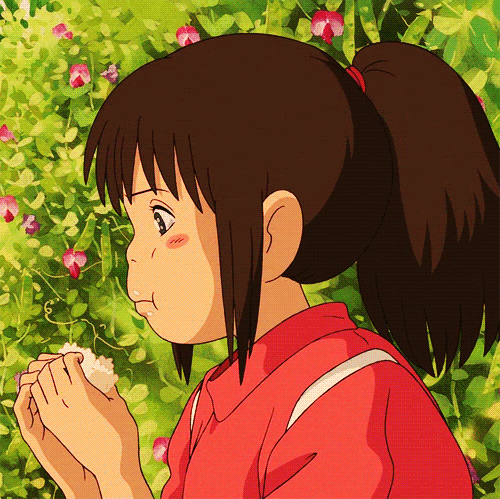

Spirited Away
What should I do with this? Do I just leave it? Finish what you start!
It's hot. Hey, you runts! Wanna turn back into soot?
And you, watch it. You can't just take someone's job if they don't work,
the spell wears off. Got no work for you here.Look elsewhere. You sootballs got a problem?!Get to work! To work!
That's my granddaughter. Granddaughter!? Says she wants to work,but I've got all the help I need.